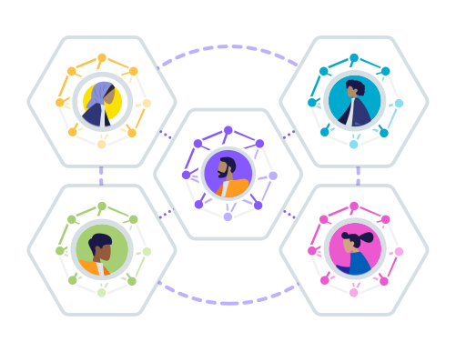

Security Vulnerabilities within Link Traversal Query Processing
Decentralization efforts such as Solid leads to a massive distribution of data

To find data, links must be followed across interlinked documents
Documents are spread over the Web
An environment that is
- uncontrolled,
- unpredictable,
- and potentially unsafe.
Analysis of security vulnerabilities
when querying over decentralized data
Personal online data vaults (a.k.a. pods)

Follow links during query execution
-
Decentralization → many of documents spread over the Web
Not possible to centralize due to practical and legal reasons.
-
Linked Data documents contain links to other documents
New documents can be found via the follow-your-nose principle.
-
Need for a non-traditional query execution approach
For discovering data and documents during query execution.
→ Link Traversal Query Processing
Hartig, O., Bizer, C., Freytag, J.-C.: Executing SPARQL Queries over the Web of Linked Data. Proceedings of the 8th International Semantic Web Conference. pp. 293–309 (2009).
Link Traversal Query Processing (LTQP)
Hartig, O., Bizer, C., Freytag, J.-C.: Executing SPARQL Queries over the Web of Linked Data. Proceedings of the 8th International Semantic Web Conference. pp. 293–309 (2009).

-
Incorporates live data discovery into query execution
By following links between documents.
The Web is an open and potentially unsafe environment
-
LTQP research so far assumes non-malicious publishers
In reality, documents and data can lead to exploits in the query engine
-
Related to vulnerabilities in Web browsers and crawlers
- Crawler traps
- Data theft
- Cross domain compromise
- Cross-domain request forgery
- ...
Analysis of vulnerabilities
- Unauthorized Statements
- Intermediate Result and Query Leakage
- Session Hijacking
- Cross-site Data Injection
- Arbitrary Code Execution
- Link Traversal Trap
- System hogging
- Document Corruption
- Cross-query Execution Interaction
- Document Priority Modification
Analysis of vulnerabilities
- Unauthorized Statements
- Intermediate Result and Query Leakage
- Session Hijacking
- Cross-site Data Injection
- Arbitrary Code Execution
- Link Traversal Trap
- System hogging
- Document Corruption
- Cross-query Execution Interaction
- Document Priority Modification
1. Unauthoritative Statements
-
Open world assumption
Anyone can say anything about anything, including incorrect things
-
Carol can express false information in her profile
:Bob :name "Dave"
Upon discovery, query engine finds two names for Bob: "Bob" and "Dave".
-
Query engine can not distinguish between results
Need for preferences or trust policies
Bogaerts, B., Ketsman, B., Zeboudj, Y., Aamer, H., Taelman, R., & Verborgh, R. (2021, September). Link Traversal with Distributed Subweb Specifications. In International Joint Conference on Rules and Reasoning (pp. 62-79). Springer, Cham.
6. Link Traversal Trap
-
Link structures cause infinite traversal paths
Query engine might get stuck in loop
-
Cycles exist in different forms
- Application level: documents link to each other
- Protocol level: HTTP redirect chains
- Virtual: long/infinite chains via dynamic pages
7. System Hogging
-
Attacks on CPU and memory usage
Malicious code execution or exploiting software flaws
-
Infinitely long RDF documents
Possible in serializations such as Turtle and N-Triples
-
Can be mitigated by streaming parsers
Don't keep full document in memory
The Web is an unsafe environment
-
Query engines need to be robust
With mitigations for security vulnerabilities
-
More work needed
Testing impact of mitigations on performance and effectivity
-
Crucial for secure querying over a decentralized Web
Especially when working with personal data